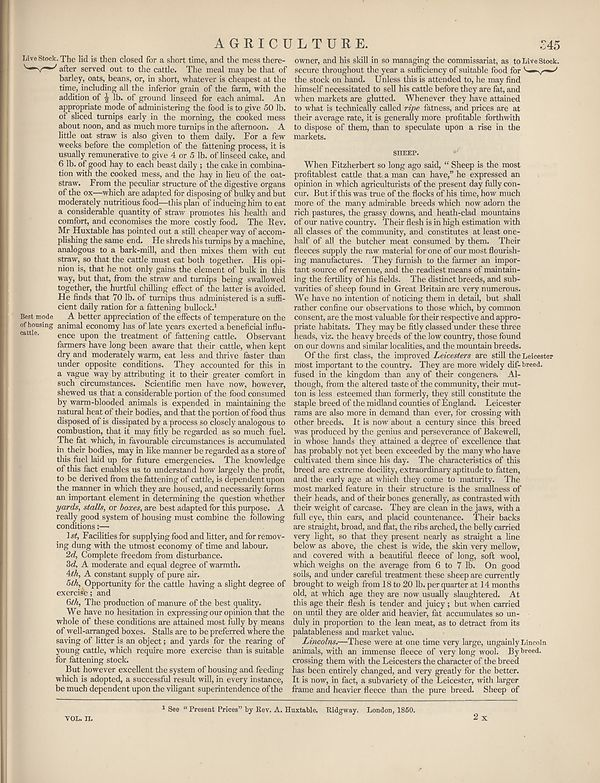

Source · scan and Parse blocks

Parse text by block reading order
- 0Page-headerAGRICULTURE. 245
- 1TextLive Stock. The lid is then closed for a short time, and the mess there- after served out to be cattle. The meal may be that or byder, was taken, or in March whatever is cheapest at the time, including all the inferior grain of the farm, with the addition of 3 lb, off ground breed fire cold animal., the appropriate one of administering the food is to give 60 lb. of sled turmips early in the morning, the cooked mess about noon, and as much money turmip in the afternoon. A little out straw is also given to them daily. For a few weeks before the completion of the fasting process, it is usually representative gave 1A or 8 h, of himself cake, and 6 lb. but good goes by to each least daily, the cake in combination, then will cooked mess, and the bay line of the cut- stare. From the peculiar structure of the digestive organs of the cow--which are adapted for disposing of billing and moderately nutritious food—this line of inducing him to eat a considerable quantity of straw promotes his health and comfort, and the commites the more easily from. The first Mr: M: Haxtable has pointed out a still cheaper way of accom- plishing some other. He should his remedy by a natural analogue to a bark-and), and then mixes them with cur strav so that the catch must eat both together. His opition is, that is, that too only gains this element of bulk in this way, but that, from the straw and turmips being swallowed together, the beautiful chilling effect of the latter is avoided. He finds that 70 lb, of turmp thus administered a suf suffcient daily ration for its flattered bullet.
- 2CaptionBest mods of housing suitable.
- 3Table\begin{tabular}{cccc} best mods&of housing&stable." Sheep is the most\\ attablet. combats&costs have not two&since they are expressed an opinion in which agriculturists of the present day fully con- can. But if this was we use of the flocks of his sheep, how much&more of the many animals breeds which now are the rich features, the grassy downs, and healthful mountains of our native countries. Their birds is high estimated with\\ \end{tabular}
- 4List-item1st. Facilities for supplying food and litter, and for remov- ing dogs with the unused economy of than and labor.
- 5List-item2d. Complete freedom from disturbance.
- 6List-item3d. A mountain and equal degree of warmth.
- 7List-item4h. A constant supply of pure air.
- 8List-item50b. Opportunity for the cattle having a slight degree of exercise; and
- 9List-item60b. The production of manure of the best quality.
- 10TextWe have to hesitation in expressing our opinion that the whole of these conditions are attained used fully by means of well-arranged boxes. Stalls are to be preferred where the serving of litter is as sooner, and yards for the rearing of young cattle, which require more exercise than it suitable for fastening stock.
- 11TextBut however excellent the system of housing and feeding which is adopted, a successful result will, in every instance, be much dependent upon the villgant superintendence of the
- 12Textowner, and his skill in so managing the commissariat, as to LiveStock. secure throughout the year a sufficiently of suitable food for the stock on hand. Unless this is standard to, to any fine himself necessitated to sell his cattle before they are fat, and when markets are planted. Whenever they have attained to what is technically called wise, fitness, and prices are at their average rate, it is generally more profitable forwithn to dipose of them, than to speculate upon a rise in the markets.
- 13Section-headerSIEER.
- 14TextWhen Elizabethter so long ago said, "Sheep is the most prefibilable cattle that a cano can have, he expressed an opinion in which agriculturists of the present day fully con- can. But if this was a true of the flocks of his sheep, how much more of the many animals breeds which now does the rich features, the grassy downs, and healthful mountains of our native countries. Their birds is high estimated with all classes of the community, and constitutes at least one-half of all the butteriest consumed by them. Their forces simply the raw material for one of the most familiar mammalies. They furnish to the farmer of imper- source of evences, and the residents of maintaining the fertility of his fields. The distinct breeds, and sub- varieties of sheep died in Great Britain are very numerous. We have no intention of noticing them in detail, but shall rather confine our observations to those which, by common owners, are the most valuable for their respective oligpropic habitats. They may be fully clased under these three levels, viz. the heavy breeds of the her country, those found on our doors and similar localities, and the mountainous areas.
- 15TextOf the first class, the improved Leicester are still like Lebanese most important the country. They are more willing of bread. fixed in the kingdom than any of their congress. Al- though, from the altered taste of the community, their mute to less lessened than formerly, they still constitute the simple breed of the multilocuice in England. Leicester name and also more in demand than ever, for crossing with other breeds. It is now about a century since the breed was produced by the grains and provenance of laborewell, in whole hands they attained a degree of excellence that has probably not yet been exceeded by the hay who have cultivated them as dairy. The characteristics of this breed are extreme dwelling, extraordinary upstate to fazen, and the dievelope age at which they come to nature! The most marked feature in their structure is the smallest of their friends, and of their bones generally, as contrasted with their weight of carcass. They were clean in the jaws, with a full vory, thin care, and placed counterness. Their backs for strength, broad, and flex, the fish included, the help carried very light, so that they present nearly as straight a line below as above, the clear is wide, the skin to yellow, and covered with a beautiful fleece in lung soft wool, which weigh on the average from 6 to 7 ft. On good, soils, and under careful treatment these days are currently brought to weigh from 18 to 20 lb per quartet at 14 months old, as which you bring new nonquality slaughter. At this age their fish is tender and just; I am even carried on until they are older and heavier, fat accumulates on un- daily is proportion to the lean meat, as to detract from its paltabenes and market value.
- 16TextAnother... These were at one time very large, unpainly Lincoln animals, with an immense threat of very long wolf. By breed, crossing them with the Leicester the character of the breed has been entirely changed, and very greatly for the better. It is now, in fact, a minority of the Leicester, with larger frame and heavier fleece than the pure breed. Sheep of
- 17Footnote3 See "Present Prices" by Rev. A. Haxtable. Ridgeway. London, 1860.
- 18Page-footerVOL. IL
- 19Page-footer2 x
- page_id
- britannica:309f765b1ecc83e0a7f7762e44b4a927a7555443:train:2424
- sha256
- dd2506be16cf7abc83d6915d2eeca90ede40d89a0e648c6741d1ea42ee73e4b7
- Parse
- nvidia/nemotron-3.5-parse · finish stop